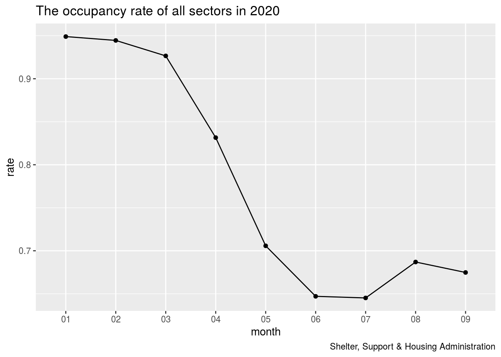
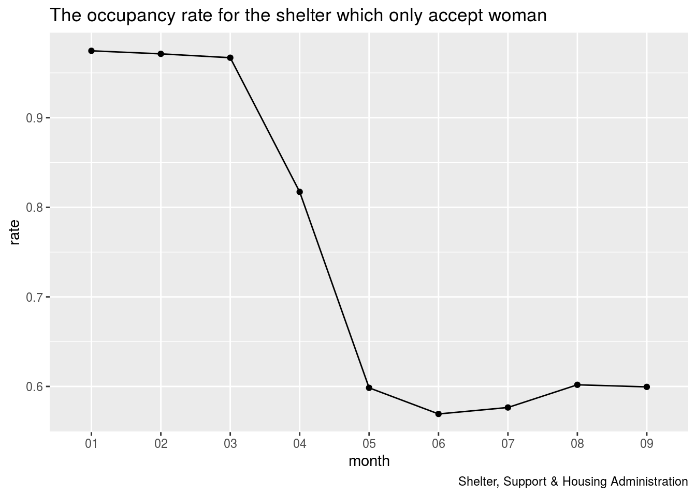
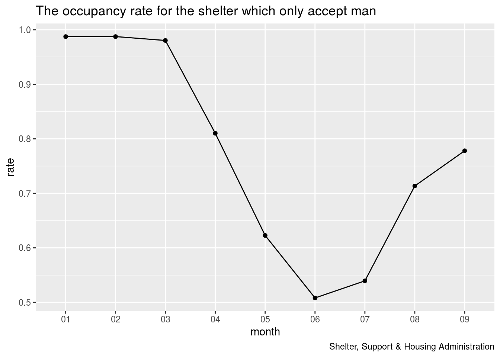
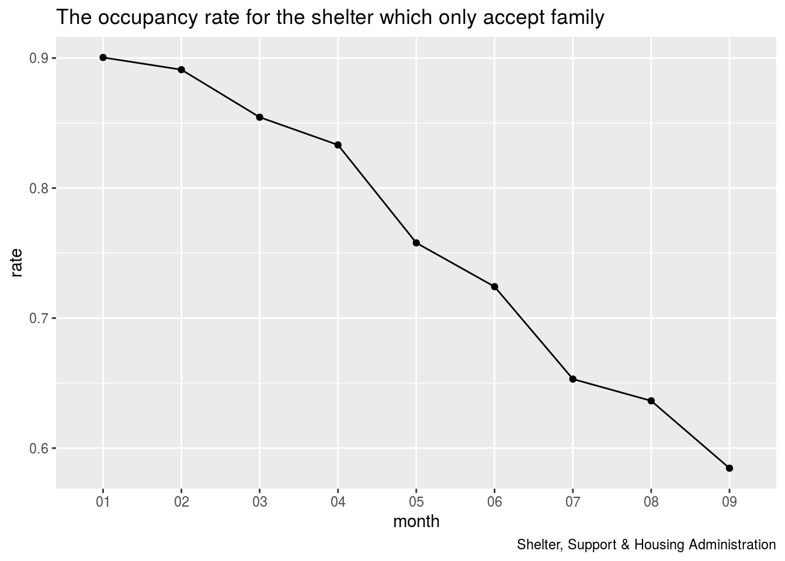
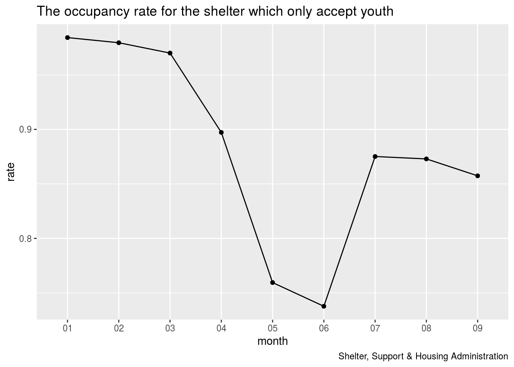
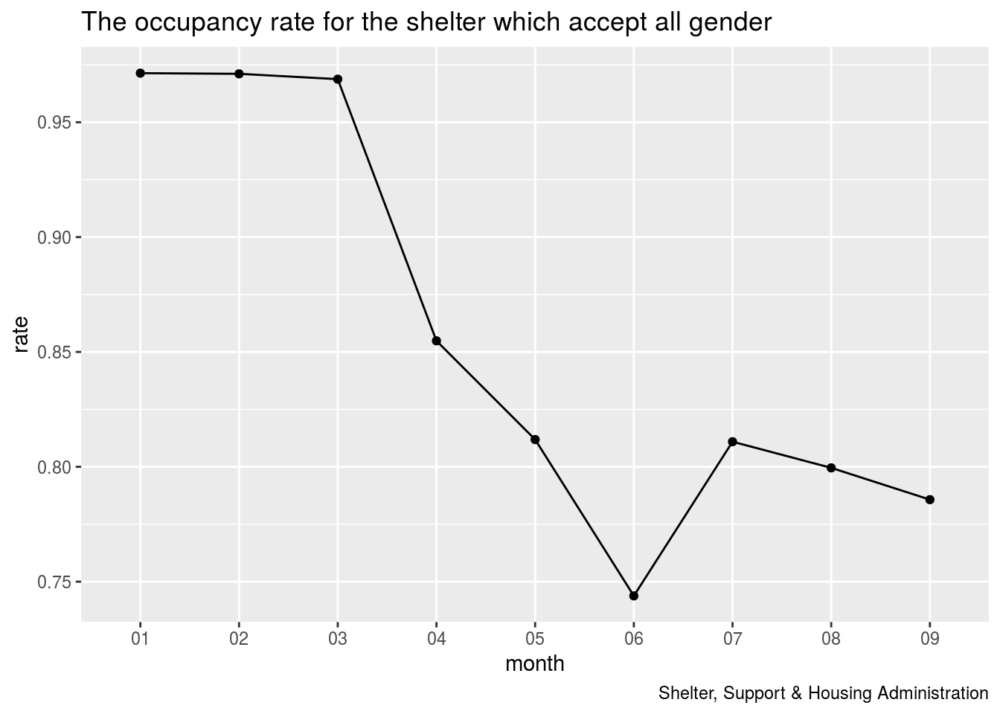

Abstraction
COV-19 has a huge impact on the world, and it has affected the normal lives of many people in Canada. As for the homeless crowd who live in the shelter, they have been greatly affected after the government introduced restrictions on the number of indoor people and shelter does not have enough resources to deal with this sudden epidemic. Our findings have implications for how much the impact of the epidemic on homeless crowd residences. (we use Wickham et al. (2019))
Introduction
COV-19 has a very significant impact on homeless people in Canada. With the government restricting the number of people indoors and shortage of supplies, many homeless people have to move out of the shelter and find other places to stay. We found that the occupancy rate of different types of shelters will have different change rate.
This study will divide 5 different types of sector and observe their occupancy rates in different months from the beginning of 2020. Taking different sectors as the research object, we can see the changes in the occupancy rate of each type of shelter in more detail and it can be easier to see which groups of people are most affected during COV-19.
In this study, we see that the occupancy rate of all shelters has been affected by COV-19 since March when the epidemic starts to spread, and the occupancy rate has declined to varying degrees, among these 5 different sectors, the occupancy rate of the shelters that only accept family is affected the most.We found that the amount of data sampling is relatively large, and the speed of data collection is relatively slow. When some special circumstances occur, the data set cannot immediately reflect the corresponding changes, which will affect our analysis results.
dat = data.frame(get_resource('5097e562-9ee0-41d2-bfd7-86878cf8fbcd'))#Find out the occupancy rate from data
dat$OCCUPANCY_RATE = dat$OCCUPANCY / dat$CAPACITY
#Set the occupancy rate equal to 0 when capacity and occupancy are 0
dat[is.na(dat)] = 0#Calculate all dates in months
dat$month = format(as.Date(dat$OCCUPANCY_DATE),'%m')
dat = dat[order(dat$month),]#Divided 5 different types of sectors into 5 groups and help people know the occupancy rate in different groups before 2020/09/19
female = dat[which(dat$SECTOR=='Women'),]
male = dat[which(dat$SECTOR=='Men'),]
family = dat[which(dat$SECTOR=='Families'),]
teen = dat[which(dat$SECTOR=='Youth'),]
both = dat[which(dat$SECTOR=='Co-ed'),]#Calculate the total occupancy rate
occtotal = aggregate(dat$OCCUPANCY, by=list(Category=dat$month), FUN=sum)
captotal = aggregate(dat$CAPACITY, by=list(Category=dat$month), FUN=sum)
rate = occtotal$x / captotal$x#Observe the total change through ggplot
tmp = data.frame('month'=unique(dat$month),'rate'=rate)
ggplot(data=tmp, aes(x=month, y=rate, group=1)) +
geom_line() +
geom_point()+
labs(x = 'month',
y = 'rate',
title = 'The occupancy rate of all sectors in 2020',
caption = 'Shelter, Support & Housing Administration')
Discussion for total change of occupancy rate
First see a general overview from the first picture. We can observe that there was about 95% occupancy rate in January, and there was a slight decrease in February but not obvious. This should be a normal amount of change. In March, there was a downward trend, but it could still be maintained at more than 90%. At that time, it should have been the detection of COV-19 cases in Canada, but no isolation measures had begun. In April, the occupancy rate began to show a cliff-like decline, by about 10%. This should be the beginning of the government’s isolation measures and plans to limit the number of people indoors to a safer number. At the same time, people began to grab shopping supplies, causing the shelters unable to supply enough resources to all homeless people for a period of time.In May, the occupancy rate continued to drop to around 70%. By June, the occupancy rate dropped to 65%. It should be that the government has taken further measures to further regulate the number of residents indoors. Therefore, the residences also follow the government’s requirements and limit the number of residents. When it drops to its lowest point in July, all residents can ensure that social distance is maintained. In August, the occupancy rate began to pick up. It should be that the epidemic is slowly being brought under control, Ontario is beginning to unblock, people can return to their jobs, and residences can start to accommodate more homeless people. Crowd, everything is starting to develop for the better. However, the occupancy rate began to decline in September, because the epidemic has recently rebounded, and the relevant departments have renewed attention to the number of indoor residents.
female$month = format(as.Date(female$OCCUPANCY_DATE),'%m')#Observe the monthly occupancy rate with shelter only accept woman
occfemale = aggregate(female$OCCUPANCY, by=list(Category=female$month), FUN=sum)
capfemale = aggregate(female$CAPACITY, by=list(Category=female$month), FUN=sum)
rate = occfemale$x / capfemale$x
tmp = data.frame('month'=unique(female$month),'rate'=rate)
ggplot(data=tmp, aes(x=month, y=rate, group=1)) +
geom_line() +
geom_point() +
labs(x = 'month',
y = 'rate',
title = 'The occupancy rate for the shelter which only accept woman',
caption = 'Shelter, Support & Housing Administration')
Discussion of occupancy rate for the shelter which only accept woman
The second picture is the study object of the residence that only accommodates female population, and observes the occupancy of female population. It can be seen from the image that the change in the female occupancy rate is roughly the same as the overall change.
male$month = format(as.Date(male$OCCUPANCY_DATE),'%m')#Observe the monthly occupancy rate with shelter only accept man
occmale = aggregate(male$OCCUPANCY, by=list(Category=male$month), FUN=sum)
capmale = aggregate(male$CAPACITY, by=list(Category=male$month), FUN=sum)
rate = occmale$x / capmale$x
tmp = data.frame('month'=unique(male$month),'rate'=rate)
ggplot(data=tmp, aes(x=month, y=rate, group=1)) +
geom_line() +
geom_point() +
labs(x = 'month',
y = 'rate',
title = 'The occupancy rate for the shelter which only accept man',
caption = 'Shelter, Support & Housing Administration')
Discussion of occupancy rate for the shelter which only accept man
The third graph is the research object of the shelter that only accommodates men. It can be seen that in January, the occupancy rate was about 98%. From January to March, there was only a slight decline. In April, like the overall change, it showed a cliff-like decline until it reached its lowest point in June. However, compared with those that only accommodate females, the number of accommodations for men has increased significantly after June, and in September the occupancy rate rose to 77%.
family$month = format(as.Date(family$OCCUPANCY_DATE),'%m')#Observe the monthly occupancy rate with shelter only accept family
occfamily= aggregate(family$OCCUPANCY, by=list(Category=family$month), FUN=sum)
capfamily = aggregate(family$CAPACITY, by=list(Category=family$month), FUN=sum)
rate = occfamily$x / capfamily$x
tmp = data.frame('month'=unique(family$month),'rate'=rate)
ggplot(data=tmp, aes(x=month, y=rate, group=1)) +
geom_line() +
geom_point() +
labs(x = 'month',
y = 'rate',
title = 'The occupancy rate for the shelter which only accept family',
caption = 'Shelter, Support & Housing Administration')
Discussion of occupancy rate for the shelter which only accept family
The fourth picture is the research object of shelters that only take in families. From the picture, it can be seen that the occupancy rate of this type of shelter has been steadily and continuously decreasing since January, with little change, and the whole curve shows a downward trend. There was no rebound trend by September.
teen$month = format(as.Date(teen$OCCUPANCY_DATE),'%m')#Observe the monthly occupancy rate with shelter only accept youth
occteen = aggregate(teen$OCCUPANCY, by=list(Category=teen$month), FUN=sum)
capteen = aggregate(teen$CAPACITY, by=list(Category=teen$month), FUN=sum)
rate = occteen$x / capteen$x
tmp = data.frame('month'=unique(teen$month),'rate'=rate)
ggplot(data=tmp, aes(x=month, y=rate, group=1)) +
geom_line() +
geom_point() +
labs(x = 'month',
y = 'rate',
title = 'The occupancy rate for the shelter which only accept youth',
caption = 'Shelter, Support & Housing Administration')
Discussion of occupancy rate for the shelter which only accept youth
The fifth graph shows the occupancy rate of young people only. In the first three months, the decline was only a small change, and it began to show a relatively large change in April, and the change was the largest in May, falling from 89% to 76%. In June, the occupancy rate still fell and reached its lowest point. But in July, there was a sharp rebound. In July, the occupancy rate rose from 73% to 87%. In August and September, it started to decline slightly.
both$month = format(as.Date(both$OCCUPANCY_DATE),'%m')##Observe the monthly occupancy rate with shelter accept all gender
occboth = aggregate(both$OCCUPANCY, by=list(Category=both$month), FUN=sum)
capboth = aggregate(both$CAPACITY, by=list(Category=both$month), FUN=sum)
rate = occboth$x / capboth$x
tmp = data.frame('month'=unique(both$month),'rate'=rate)
ggplot(data=tmp, aes(x=month, y=rate, group=1)) +
geom_line() +
geom_point() +
labs(x = 'month',
y = 'rate',
title = 'The occupancy rate for the shelter which accept all gender',
caption = 'Shelter, Support & Housing Administration')
Discussion of occupancy rate for the shelter which accept all gender
The last picture is the research unit of the shelter that accommodates all genders. The chances did not change much in the first three months, but there was a big drop in April, from 98% to 86%. In May it continued to drop to 83%. In June, it dropped to the lowest point of 74%. In July, it rebounded to 83%, which was the same high as in May. There was a slow decline in August and September.
weakeness and next step
In this experiment, because the data collected is all the active shelters serving the City of Toronto area. The data collected is relatively extensive, and changes in the data will not be revealed until a period of time. In the face of some sudden situations, such as the sudden increase of the epidemic or the shortage of supplies, we cannot immediately analyze the impact of changes in data. On the other hand, it is difficult to ensure that all shelters report the situation truthfully. Perhaps some shelters will miscalculate that their supplies are sufficient and resulting in a high occupancy rate, which will directly affect our final experimental results. I think this experiment can change from daily data to data collected every 3 days or collect data at longer intervals, so that the data has enough time to show changes and give us more direct conclusions. And this approach can also reduce some costs so that we can put investigation funds in other areas to refine the results of the investigation.
Reference
Open Data Dataset. (n.d.). Retrieved September 21, 2020, from https://open.toronto.ca/dataset/daily-shelter-occupancy/
Sharla Gelfand (2020). opendatatoronto: Access the City of Toronto Open Data Portal. R package version 0.1.3. https://CRAN.R-project.org/package=opendatatoronto
H. Wickham. ggplot2: Elegant Graphics for Data Analysis. Springer-Verlag New York, 2016.
R Core Team (2020). R: A language and environment for statistical computing. R Foundation for Statistical Computing, Vienna, Austria. URL https://www.R-project.org/.
JJ Allaire and Yihui Xie and Jonathan McPherson and Javier Luraschi and Kevin Ushey and Aron Atkins and Hadley Wickham and Joe Cheng and Winston Chang and Richard Iannone (2020). rmarkdown: Dynamic Documents for R. R package version 2.3. URL https://rmarkdown.rstudio.com.
Wickham, Hadley, Mara Averick, Jennifer Bryan, Winston Chang, Lucy D’Agostino McGowan, Romain François, Garrett Grolemund, et al. 2019. “Welcome to the tidyverse.” Journal of Open Source Software 4 (43): 1686. https://doi.org/10.21105/joss.01686.